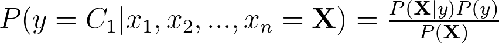

Resumasso dos modelos tradicionais de Machine Learning.
Começando do começo, mas nem tão do começo assim, sabemos que as tarefas tradicionais em que Machine Learning é aplicado resumem-se a classificação, regressão e clusterização; existem outras tarefas, como otimização, redução de dimensionalidade e sistemas de , por exemplo, mas não é o caso aqui. Trataremos dos algoritmos para aquelas três.
Temos um problema de classificação quando precisamos dizer se um exemplo (ou registro, ou instância, ou entrada) pertence a uma determinada classe ou rótulo. A regressão, por sua vez, ocorre quando, a partir das características de cada exemplo, queremos atribuir um número (e não uma classe representada por um número). Agora, quando falamos de clusterização, estamos querendo definir grupos de indivíduos que são semelhantes entre si.
Algoritmos de Classificação
Com as definições em mente, podemos seguir, primeiramente, com os algoritmos classificação, chamados, agora, de classificadores. O primeiro que veremos é o classificador Naive Bayes.
Naive Bayes
O algoritmo Naive Bayes é um classificador probabilístico que, apesar de ser chamado de Naive, ou “ingênuo”, pode apresentar excelente desempenho, principalmente quando associado a processamento de linguagem natural. Esse modelo é dito “ingênuo”, porque, em sua derivação matemática, parte-se do pressuposto de que as características dos dados de entrada são independentes uma das outras, o que muitas vezes não é verdade.
O treinamento do modelo é a geração de uma “tabela” de probabilidades, na qual possui as probabilidades de cada atributo dado que o exemplo pertence a uma determinada classe.
A sua derivação matemática não é complexa e parte do Teorema de Bayes, mostrada abaixo, em que X é o conjunto de n atributos de uma instância a qual queremos classificar como y.

Assumimos, então, que os atributos são independentes entre si e cada um afeta da mesma forma a variável alvo, isto é, a classe. A equação acima torna-se:
Aqui vale algumas considerações. Olhando para o numerador da fração, onde assumimos que os atributos são independentes, podemos calcular cada probabilidade condicional simplesmente pegando a proporção de cada categoria do atributo x_n, se estivermos diante de atributos que sejam variáveis categóricas, para cada possível classe. Caso os atributos sejam variáveis contínuas, pega-se a média e o desvio padrão de cada atributo com relação a cada classe para calcular as probabilidades através de uma distribuição Gaussiana.
A classificação será feita, portanto, pegando apenas o numerador da equação anterior, uma vez que o denominador é sempre constante, e a classe será definida como aquela em que a multiplicação for a maior.
Árvores de Decisões
O segundo modelo que veremos são as Árvores de Decisões e alguns modelos delas provenientes. O treinamento dessas árvores é, essencialmente, a definição de um conjunto de regras baseadas nas instâncias de treinamento.
Cada nó de decisão representa uma pergunta feita pela árvore aos atributos do conjunto de dados. Além disso, cada nó é definido pelo grau de importância de cada atributos, calculado pelo ganho de informação (GI). Assumimos, por simplicidade, que cada nó gera apenas dois possíveis ramos.
Inicialmente, o ganho de informação é calculado para cada atributo f. O conjunto de dados inicial D_p, com N_p exemplos, é dividido com relação ao atributo que apresentar maior GI, originando um conjunto de dados para a esquerda D_esq, com N_esq exemplos, e um conjunto de dados para a direita D_dir, com N_dir exemplos. Assim, para o conjunto de dados resultantes, este procedimento é repetido. Na equação acima, I é uma medidade de impureza, uma espécie de função de custo. Essa função pode ser a impureza de Gini, que mede o grau de “ruído” de cada atributo, ou pode ser a Entropia, que mede o quanto uma variável aleatória é imprevisível. O algoritmo para quando algum critério de parada for atendido, que pode ser a quantidade de atributos analisados, profundidade máxima, quantidade de exemplos, etc.
Uma versão bombada das árvores de decisões é a Random Forest. Só pelo nome podemos imaginar que se trata de várias árvores de decisões combinadas. Basicamente, o classificador Random Forest implementa várias árvores de decisões descorrelacionadas, selecionando atributos aleatórios para cada árvore, e decide pelo voto da maioria das predições individuais. Cada árvore unitária é treinada com uma versão reamostrada do conjunto de dados original, de modo que essas versões representem bem a população original.
Uma outra forma de combinar árvores de decisões é o conhecido algoritmo AdaBoost, ou Adaptative Boost. Esse algoritmo treina uma primeira árvore atribuindo pesos iguais para cada exemplo. Uma segunda árvore é treinada, agora, com os pesos aumentados para aqueles exemplos que foram mais difíceis classificar na primeira árvore e assim o algoritmo segue até uma quantidade de iterações desejada. A classificação é realizada pegando o voto de cada árvore treinada durante a execução do algoritmo.
A generalização do algoritmo anterior é chamada de Gradient Boost Machines, das quais podemos destacar XGBoost e LightGBM. O que esses modelos fazem, em essência, é tentar minimizar uma função de custo, que recebe a saída de uma árvore e os valores originais, para otimizar os pesos de cada instância de treino.
k-Nearest Neighbors
O método de aprendizado k-Nearest Neighbors é dito um lazy learner, uma vez que ele não é, de fato, treinado; mas, para cada instância de teste que chega, calcula-se sua distância para os dados de treino utilizando a Distância de Minkowski.
Calculada a distância entre o exemplo de teste e todos os dados de treino, ordena-se uma lista com todas distâncias e seleciona-se as k (geralmente 5) menores distâncias. A classificação será realizada de acordo com a classe mais frequente dos k exemplos de treino selecionados.
Máquinas de Vetores Suporte
As máquinas de Vetores Suporte são algoritmos um pouco mais complexos de se compreender, já que exigem uma capacidade de abstração mais elevada. Vou tentar simplificar a ideia com uma visualização.
Imagine que estamos numa sala cúbica, onde idosos tendem a se concentrar do lado esquerdo e pessoas mais jovens tendem a se concentrar do lado direito. Podemos criar duas paredes infinitesimalmente finas, ou seja, um plano, para separarmos cada um dos grupos. Cada parede dessa encontra-se suportada pelos indivíduos mais extremos de cada grupo, chamados vetores de suporte. A distância entre as paredes que separam os grupos dos idosos e dos jovens é chamada de margem, e o objetivo desse algoritmo é maximizar esta margem para encontrarmos uma fronteira de decisão.
Quando passamos para dimensões maiores, perdemos a capacidade de visualização, porém, conseguimos criar abstrações. Basta imaginar que temos diversos exemplos que podem ser separados por hiperplanos (uma generalização do conceito de plano) e, entre esses hiperplanos, existe uma fronteira de decisão.
Entretanto, os dados nem sempre (quase nunca) podem ser separados por uma “linha”, dizemos que são dados linearmente inseparáveis. Para superar este empecilho, uma das vantagens das Máquinas de Vetores Suporte é sua capacidade de utilizar Kernels, isto é, funções que pegam os dados e os projetam em uma dimensão maior, onde serão linearmente separáveis, através de uma função de mapeamento.

Existem diversas funções de Kernel, as quais serão aplicadas a depender da distribuição dos dados. Dentre as funções de Kernel, destacam-se Kernel Gaussiano, Funções de Base Radiais, Polinomial, entre outros.
Regressão Logística
A regressão logística, apesar do nome, é um classificador binário, isto é, entrega apena duas possíveis classes.
O algoritmo parte da ideia de que o logaritmo natural das possibilidade em favor de um determinado evento positivo p, chamada função logit(p), é um número real e pode ser escrito como uma função linear, com pesos w_1, …, w_n. Desse modo, a função logit da probabilidade de um exemplo com características x_1, x_2, …, x_n pertencer a classe C_1 pode ser escrita como:
A função logit servirá, então, como entrada da função logística, que recebe um número real como entrada e retorna um número entre 0 e 1.
A saída da função logística corresponderá, portanto, à probabilidade do exemplo pertencer à classe positiva, ou seja, quanto mais perto de 1, maior a probabilidade.
Vale ressaltar que os pesos são inicializados aleatoriamente e, por isso, não estão gerando classificações precisas. Assim, devemos otimizá-los para aumentar os nossos acertos.
Após a primeira classificação dos dados, calculamos os erros das predições, atualizamos os pesos fazendo
e alimentamos uma função de custo J. Repetimos o processo até conseguirmos um erro considerável.
Algoritmos de Regressão
Partiremos agora para os algoritmos de regressão, em que buscaremos retornar um número real e não uma classe.
Regressão Linear
A regressão linear simples será o primeiro algoritmo que veremos. Neste caso, iremos verificar o relacionamento entre duas variáveis: uma variável dependente y e uma variável independente, ou preditora, x.
O objetivo principal da regressão linear simples é encontrar uma linha que passa por todos os n elementos de um conjunto de ponto produzindo menor erro possível, ou seja, encontrar os parâmetros a e b de uma função linear da forma y_hat=ax+b que minimizem uma função de custo J.
Utiliza-se, então o famigerado método Gradiente Descendente para, a cada iteração, atualizar a e b e, portanto, minimizar J.
Entretanto, no mundo do Machine Learning, quase nunca temos um conjunto de dados somente com um variável preditora, mas sim com n variáveis independentes. Neste caso, estaríamos diante de uma regressão multivariada. Nesse contexto, o que estamos interessado em fazer é buscar os pesos w_0, w_1, …, w_n de uma função linear mostrada abaixo que minimizem a função de custo J.
O processo de atualização de pesos, neste caso, também é feito pelo método Gradiente Descendente.
Muitas vezes nosso modelo acaba perdendo a capacidade de generalizar, isto é, ele aprende muito bem os dados de treino, mas erra muito em dados novos, em outras palavras, o nosso modelo ficou específico demais para os dados de treino. Muitas vezes, isso acontece porque o modelo escolhido está complexo demais e, para solucionar isso, aplicamos uma penalidade ao modelo. Essa penalidade é chamada de regularização e surge como um termo aditivo na função de custo.
Um possível forma de regularização aplicada à regressão linear é a chamada Ridge Regression que penaliza o modelo adicionando à função de custo um termo proporcional à soma dos quadrados dos coeficientes w_1, w_2, …, w_d, também conhecida como regularização L2.
Existe também a dita Lasso Regression, uma prima da Ridge…, porém, ela penaliza o modelo adicionando a soma dos valores absolutos dos pesos w_1, w_2, …, w_d, ou regularização L1.
Algoritmos de Clusterização
Partiremos, agora, aos algoritmos de clusterização. Essa tarefa, como dito anteriormente, busca separar exemplos semelhantes do conjunto de dados em grupos, em outras palavras, atribuiremos a cada exemplo um rótulo que indica a qual grupo o indivíduo pertence.
k-Means
O primeiro algoritmo a ser visto aqui será o k-Means, um dos modelos de clusterização mais populares nos dias de hoje.
Seu funcionamento é simples: primeiro definimos a quantidade de agrupamentos desejamos; em seguida, para cada agrupamento definidos, inicializaremos um centroide em uma posição aleatória; os dados, então, serão marcados como pertencentes ao grupo do centroide mais próximo, através de uma medida de distância; após isso, os centroides são atualizados para o ponto central dos elementos marcados como pertencente àquele grupo; o processo é repetido até que não haja mais mudanças nos grupos ou um número de iterações previamente definido seja alcançado.
Após entendermos o funcionamento básico do algoritmo, surge uma dúvida: como saber o número ideal de agrupamentos? Muitas vezes essa dúvida é respondida pelas próprias regras de negócio; entretanto, quando precisamos de uma abordagem mais técnica, podemos recorrer ao famoso Elbow Method, porém, falarei aqui de um método menos popular, mas, muitas vezes, mais eficiente que o anterior: Silhouette Method (SM).
O SM consiste em uma visualização gráfica em que é plotado o Coeficiente de Silhueta (CS) contra a quantidade de clusters. O CS é calculado pegando a distância média intra-cluster e a distância média dos clusters mais próximo para cada exemplo, que não seja o seu próprio cluster. A visualização gráfica do SM indicará a quantidade ótima de agrupamentos a ser utilizado.
O algoritmo k-Mean, por utilizar médias, é muito sensível a outliers, podendo distorcer a solução do problema. Uma possível solução para este problema é considerar o centro de um agrupamento como um elemento pertencente a este cluster. Essa solução é conhecida como k-Medoids.
DBSCAN
Muitas vezes não sabemos quantos clusters devemos ter em nossa modelagem, desse modo, o k-Means não se mostra uma boa opção.
O DBSCAN (Density-Based Spatial Clustering of Applications with Noise) surge para solucionar o problema anteriormente mencionado. Ele funciona analisando cada ponto do conjunto de dados e agrupando aqueles que, em um dado raio, possui uma determinada quantidade de pontos próximos. Os pontos que não possuírem nenhum outro ponto dentro de seu raio será considerado ruído e os pontos que não apresentarem a quantidade mínima de pontos serão chamados de pontos de borda
Clusterização Hierárquica
O último modelo que veremos aqui é a Clusterização Hierárquica. Esse procedimento possui duas abordagens: clusterização aglomerativa e a clusterização divisiva.
A clusterização aglomerativa é o método mais comumente utilizado. Esse método primeiro considera todos os dados como agrupamentos individuais. Em seguida, utilizando matrizes de similaridade, agrupa os dados semelhantes, e, assim, segue até restar um único grande cluster ou atendar uma quantidade de clusters especificada.
A clusterização divisiva funciona de forma contrária. Ela primeiro considera todos os dados como um único grande cluster, então, utilizando um algoritmo como o k-Nearest Neighbors e matrizes de similaridade, passa a segmentar os dados até uma quantidade de clusters previamente especificada.
Conclusão
Nesse artigo conseguimos fazer um apanhado geral sobre como funcionam os principais modelos de Machine Learning, tanto para o aprendizado supervisionado, quanto para o não supervisionado. Dessa forma, espero que esse artigo sirva como material de consulta sempre quando aquela dúvida sobre algum algoritmo bater.
Fica aqui meu LinkedIn para eventuais dúvida e correções.